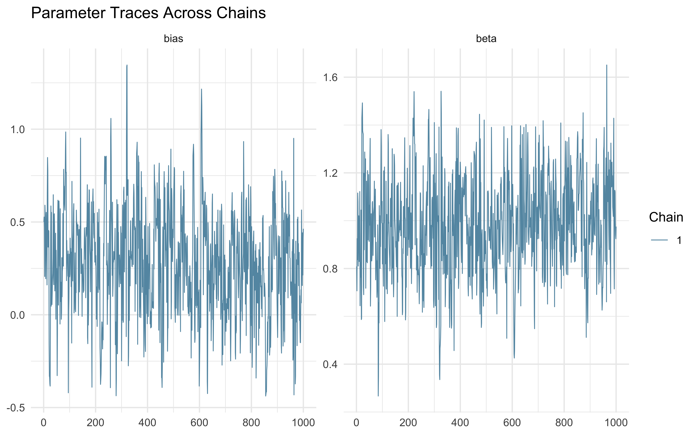
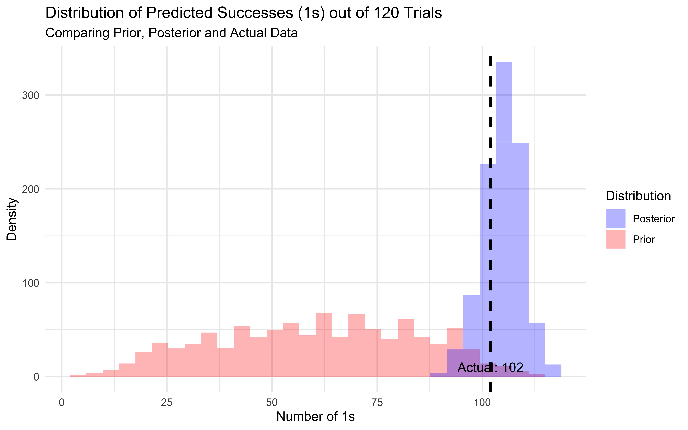
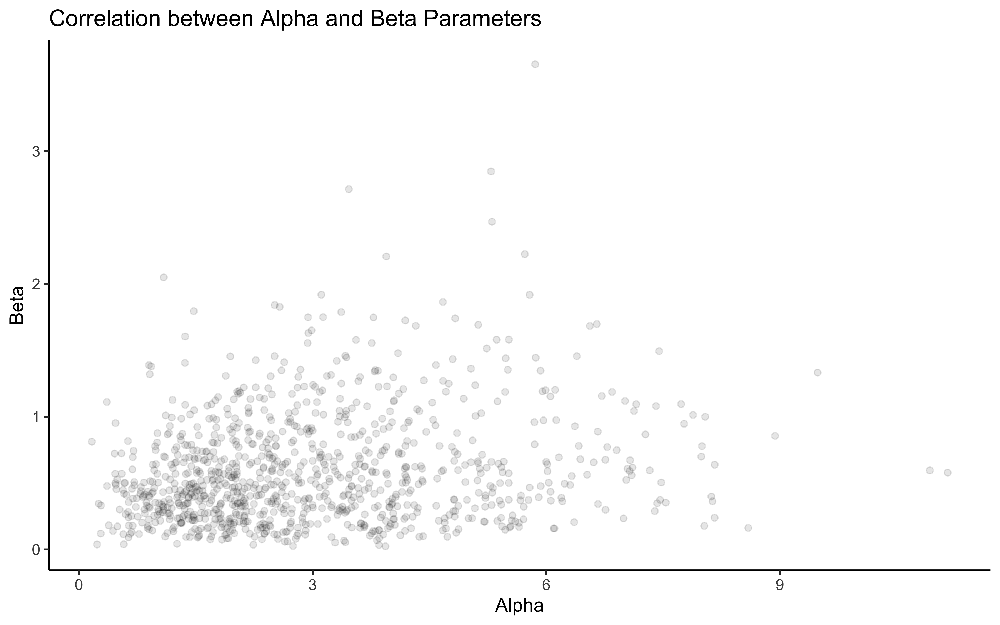

Chapter 5 From simulation to model fitting
This chapter introduces essential techniques for moving from theoretical models to empirical validation. Building on our implementation of decision-making agents, we now tackle the challenge of determining whether these models accurately describe observed behavior.
5.1 Learning Goals
After completing this chapter, you will be able to:
Design and implement Bayesian parameter estimation for cognitive models using Stan
Create and interpret prior and posterior predictive checks to validate model behavior
Evaluate model quality through systematic parameter recovery studies
5.2 The Challenge of Model Fitting
Understanding human behavior requires more than just implementing plausible models - we must determine whether these models actually capture meaningful empirical patterns. Consider our biased agent model that tends to favor one choice over another. While we can specify different levels of bias in our simulations, real-world application requires determining what bias values best explain observed behavior, and for instance whether a pharmacological manipulation can affect the bias.
Bayesian inference provides a powerful framework for this challenge. It allows us to:
Express our prior beliefs about reasonable parameter values
Update these beliefs based on observed data
Quantify uncertainty in our parameter estimates
Generate predictions that account for parameter uncertainty
5.3 Simulating data
As usual we start with simulated data, where we know the underlying mechanisms and parameter values.
Simulated data are rarely enough (empirical data often offer unexpected challenges), but they are a great starting point to stress test your model: does the model reconstruct the right parameter values? Does it reproduce the overall patterns in the data?
Here we build a new simulation of random agents with bias and noise. The code and visualization is really nothing different from last chapter.
pacman::p_load(tidyverse,
here,
posterior,
cmdstanr,
brms, tidybayes)
trials <- 120
RandomAgentNoise_f <- function(rate, noise) {
choice <- rbinom(1, 1, rate) # generating noiseless choices
if (rbinom(1, 1, noise) == 1) {
choice = rbinom(1, 1, 0.5) # introducing noise
}
return(choice)
}
d <- NULL
for (noise in seq(0, 0.5, 0.1)) { # looping through noise levels
for (rate in seq(0, 1, 0.1)) { # looping through rate levels
randomChoice <- rep(NA, trials)
for (t in seq(trials)) { # looping through trials (to make it homologous to more reactive models)
randomChoice[t] <- RandomAgentNoise_f(rate, noise)
}
temp <- tibble(trial = seq(trials), choice = randomChoice, rate, noise)
temp$cumulativerate <- cumsum(temp$choice) / seq_along(temp$choice)
if (exists("d")) {
d <- rbind(d, temp)
} else{
d <- temp
}
}
}
write_csv(d, "simdata/W3_randomnoise.csv")
# Now we visualize it
p1 <- ggplot(d, aes(trial, cumulativerate, group = rate, color = rate)) +
geom_line() +
geom_hline(yintercept = 0.5, linetype = "dashed") +
ylim(0,1) +
facet_wrap(.~noise) +
theme_classic()
p1
5.4 Building our basic model in Stan
N.B. Refer to the video and slides for the step by step build-up of the Stan code.
Now we subset to a simple case, no noise and rate of 0.8, to focus on the Stan model. We make it into the right format for Stan, build the Stan model, and fit it.
5.4.1 Data
Here we define the data and format it for Stan. Stan likes data as a list. Why a list? Well, dataframes (now tibbles) are amazing. But they have a big drawback: they require each variable to have the same length. Lists do not have that limitation, they are more flexible. So, lists. We’ll have to learn how to live with them.
5.4.2 Model
We write the stan code within the R code (so I can show it to you more easily), then we save it as a stan file, which can be loaded at a later stage in order to compile it. [Missing: more info on compiling etc.]
Remember that the minimal Stan model requires 3 chunks, one specifying the data it will need as input; one specifying the parameters to be estimated; one specifying the model within which the parameters appear, and the priors for those parameters.
stan_model <- "
// This model infers a random bias from a sequences of 1s and 0s (right and left hand choices)
// The input (data) for the model. n of trials and the sequence of choices (right as 1, left as 0)
data {
int<lower=1> n; // n of trials
array[n] int h; // sequence of choices (right as 1, left as 0) as long as n
}
// The parameters that the model needs to estimate (theta)
parameters {
real<lower=0, upper=1> theta; // rate or theta is a probability and therefore bound between 0 and 1
}
// The model to be estimated (a bernoulli, parameter theta, prior on the theta)
model {
// The prior for theta is a beta distribution alpha of 1, beta of 1, equivalent to a uniform between 0 and 1
target += beta_lpdf(theta | 1, 1);
// N.B. you could also define the parameters of the priors as variables to be found in the data
// target += beta_lpdf(theta | beta_alpha, beta_beta); BUT remember to add beta_alpha and beta_beta to the data list
// The model consists of a bernoulli distribution (binomial w 1 trial only) with a rate theta
target += bernoulli_lpmf(h | theta);
}
"
write_stan_file(
stan_model,
dir = "stan/",
basename = "W3_SimpleBernoulli.stan")5.4.3 Compiling and fitting the model
## Specify where the model is
file <- file.path("stan/W3_SimpleBernoulli.stan")
# Compile the model
mod <- cmdstan_model(file,
# this specifies we can parallelize the gradient estimations on multiple cores
cpp_options = list(stan_threads = TRUE),
# this is a trick to make it faster
stanc_options = list("O1"))
# The following command calls Stan with specific options.
samples <- mod$sample(
data = data, # the data :-)
seed = 123, # a seed, so I always get the same results
chains = 2, # how many chains should I fit (to check whether they give the same results)
parallel_chains = 2, # how many of the chains can be run in parallel?
threads_per_chain = 2, # distribute gradient estimations within chain across multiple cores
iter_warmup = 1000, # warmup iterations through which hyperparameters (steps and step length) are adjusted
iter_sampling = 2000, # total number of iterations
refresh = 0, # how often to show that iterations have been run
output_dir = "simmodels", # saves the samples as csv so it can be later loaded
max_treedepth = 20, # how many steps in the future to check to avoid u-turns
adapt_delta = 0.99, # how high a learning rate to adjust hyperparameters during warmup
)
# Same the fitted model
samples$save_object("simmodels/W3_SimpleBernoulli.rds")5.4.4 Summarizing the model
Now the model is ready to be assessed. First we simply generate a summary of the estimates to have a first idea.
## # A tibble: 2 × 10
## variable mean median sd mad q5 q95 rhat ess_bulk ess_tail
## <chr> <dbl> <dbl> <dbl> <dbl> <dbl> <dbl> <dbl> <dbl> <dbl>
## 1 lp__ -54.9 -54.7 0.739 0.324 -56.4 -54.4 1.00 991. 987.
## 2 theta 0.835 0.837 0.0342 0.0340 0.775 0.887 1.00 1117. 1012.5.4.5 Assessing model quality
Then we need to look more in the details at the quality of the estimation: * the markov chains * how the prior and the posterior estimates relate to each other (whether the prior is constraining the posterior estimate)
# Extract posterior samples and include sampling of the prior:
draws_df <- as_draws_df(samples$draws())
# Checking the model's chains
ggplot(draws_df, aes(.iteration, theta, group = .chain, color = .chain)) +
geom_line() +
theme_classic()
# add a prior for theta (ugly, but we'll do better soon)
draws_df <- draws_df %>% mutate(
theta_prior = rbeta(nrow(draws_df), 1, 1)
)
# Now let's plot the density for theta (prior and posterior)
ggplot(draws_df) +
geom_density(aes(theta), fill = "blue", alpha = 0.3) +
geom_density(aes(theta_prior), fill = "red", alpha = 0.3) +
geom_vline(xintercept = 0.8, linetype = "dashed", color = "black", linewidth = 1.5) +
xlab("Rate") +
ylab("Posterior Density") +
theme_classic()
As we can see from the posterior estimates and the prior posterior update check, our model is doing a decent job. It doesn’t exactly reconstruct the rate of 0.8, but 0.755 is pretty close and 0.8 is included within the credible interval.
Now we build the same model, but using the log odds scale for the theta parameter, which will become useful later when we condition theta on variables and build multilevel models (as we can do what we want in a log odds space and it will always be bound between 0 and 1).
stan_model <- "
// This model infers a random bias from a sequences of 1s and 0s (right and left hand choices)
// The input (data) for the model. n of trials and the sequence of choices (right as 1, left as 0)
data {
int<lower=1> n; // n of trials
array[n] int h; // sequence of choices (right as 1, left as 0) as long as n
}
// The parameters that the model needs to estimate (theta)
parameters {
real theta; // note it is unbounded as we now work on log odds
}
// The model to be estimated (a bernoulli, parameter theta, prior on the theta)
model {
// The prior for theta on a log odds scale is a normal distribution with a mean of 0 and a sd of 1.
// This covers most of the probability space between 0 and 1, after being converted to probability.
target += normal_lpdf(theta | 0, 1);
// as before the parameters of the prior could be fed as variables
// target += normal_lpdf(theta | normal_mu, normal_sigma);
// The model consists of a bernoulli distribution (binomial w 1 trial only) with a rate theta,
// note we specify it uses a logit link (theta is in logodds)
target += bernoulli_logit_lpmf(h | theta);
}
"
write_stan_file(
stan_model,
dir = "stan/",
basename = "W3_SimpleBernoulli_logodds.stan")## [1] "/Users/au209589/Dropbox/Teaching/AdvancedCognitiveModeling23_book/stan/W3_SimpleBernoulli_logodds.stan"## With the logit format
## Specify where the model is
file <- file.path("stan/W3_SimpleBernoulli_logodds.stan")
mod <- cmdstan_model(file,
cpp_options = list(stan_threads = TRUE),
stanc_options = list("O1"))
# The following command calls Stan with specific options.
samples <- mod$sample(
data = data,
seed = 123,
chains = 2,
parallel_chains = 2,
threads_per_chain = 2,
iter_warmup = 1000,
iter_sampling = 2000,
refresh = 0,
output_dir = "simmodels",
max_treedepth = 20,
adapt_delta = 0.99,
)## Running MCMC with 2 parallel chains, with 2 thread(s) per chain...
##
## Chain 1 finished in 0.0 seconds.
## Chain 2 finished in 0.1 seconds.
##
## Both chains finished successfully.
## Mean chain execution time: 0.0 seconds.
## Total execution time: 0.4 seconds.5.4.6 Summarizing the results
samples <- readRDS("simmodels/W3_SimpleBernoulli_logodds.rds")
# Diagnostics
samples$cmdstan_diagnose()## Checking sampler transitions treedepth.
## Treedepth satisfactory for all transitions.
##
## Checking sampler transitions for divergences.
## No divergent transitions found.
##
## Checking E-BFMI - sampler transitions HMC potential energy.
## E-BFMI satisfactory.
##
## Rank-normalized split effective sample size satisfactory for all parameters.
##
## Rank-normalized split R-hat values satisfactory for all parameters.
##
## Processing complete, no problems detected.# Extract posterior samples and include sampling of the prior:
draws_df <- as_draws_df(samples$draws())
ggplot(draws_df, aes(.iteration, theta, group = .chain, color = .chain)) +
geom_line() +
theme_classic()
# add a prior for theta (ugly, but we'll do better soon)
draws_df <- draws_df %>% mutate(
theta_prior = rnorm(nrow(draws_df), 0, 1)
)
# Now let's plot the density for theta (prior and posterior)
ggplot(draws_df) +
geom_density(aes(theta), fill = "blue", alpha = 0.3) +
geom_density(aes(theta_prior), fill = "red", alpha = 0.3) +
geom_vline(xintercept = 1.38, linetype = "dashed", color = "black", size = 1.5) +
xlab("Rate") +
ylab("Posterior Density") +
theme_classic()
## # A tibble: 2 × 10
## variable mean median sd mad q5 q95 rhat ess_bulk ess_tail
## <chr> <dbl> <dbl> <dbl> <dbl> <dbl> <dbl> <dbl> <dbl> <dbl>
## 1 lp__ -59.6 -59.4 0.672 0.319 -60.9 -59.1 1.00 1371. 1245.
## 2 theta 1.42 1.41 0.221 0.230 1.06 1.78 1.00 1088. 1391.We can see that the results are very similar.
5.5 Parameter recovery
Now that we see that the model works in one case, we can run it throughout all possible rate and noise levels in the simulation. N.B. here is using loops, parallelized version in the next code chunk.
# Now we need to scale it up to all possible rates and noises
# recovery_df <- NULL
#
# for (noiseLvl in unique(d$noise)) {
#
# for (rateLvl in unique(d$rate)) {
#
# dd <- d %>% subset(
# noise == noiseLvl & rate == rateLvl
# )
#
# data <- list(
# n = 120,
# h = dd$choice
# )
#
# samples <- mod$sample(
# data = data,
# seed = 123,
# chains = 1,
# parallel_chains = 1,
# threads_per_chain = 1,
# iter_warmup = 1000,
# iter_sampling = 2000,
# refresh = 0,
# max_treedepth = 20,
# adapt_delta = 0.99,
# )
#
# draws_df <- as_draws_df(samples$draws())
# temp <- tibble(biasEst = inv_logit_scaled(draws_df$theta),
# biasTrue = rateLvl, noise = noiseLvl)
#
#
# if (exists("recovery_df")) {recovery_df <- rbind(recovery_df, temp)} else {recovery_df <- temp}
#
# }
#
# }
#
# write_csv(recovery_df, "simdata/W3_recoverydf_simple.csv")Now we can look at the relation between the “true†bias value we inputted in the simulation and the inferred bias value - the posterior estimates of bias.
recovery_df <- read_csv("simdata/W3_recoverydf_simple.csv")
ggplot(recovery_df, aes(biasTrue, biasEst)) +
geom_point(alpha = 0.1) +
geom_smooth() +
facet_wrap(.~noise) +
theme_classic()
There’s much to be said about the final plot, but for now let’s just say that it looks good. We can reconstruct in a nice ordered way true rate values. However, our ability to do so decreases with the increase in noise. So far no surprises. Wait, you say, shouldn’t we actually model the generative process, that is, include noise in the Stan model? Gold star, there! But let’s wait a bit before we get there, we’ll need mixture models.
One final note before moving to the memory model: what if we parallelized the parameter recovery, so that different models / datasets run on different cores? This was not necessary above (it ran in a few minutes anyway), but will become crucial with more complex models.
To parallelize, we rely on furrr, a neat R package that distributes parallel operations across cores. First we need to define the function that will define the operations to be run on each core separately, here we simulate the data according to a seed, a n of trials, a rate and a noise, and then we fit the model to them. Second, we need to create a tibble of the seeds, n of trials, rate and noise values that should be simulated. Third, we use future_pmap_dfr to run the function on each row of the tibble above separately on a different core. Note that I set the system to split across 4 parallel cores (to work on my computer without clogging it). Do change it according to the system you are using. Note that if you have 40 “jobs†(rows of the tibble, sets of parameter values to run), using e.g. 32 cores will not substantially speed things more than using 20.
# pacman::p_load(future, purrr, furrr)
#
# plan(multisession, workers = 4)
#
# sim_d_and_fit <- function(seed, trials, rateLvl, noiseLvl) {
#
# for (t in seq(trials)) { # looping through trials (to make it homologous to more reactive models)
# randomChoice[t] <- RandomAgentNoise_f(rateLvl, noiseLvl)
# }
# temp <- tibble(trial = seq(trials), choice = randomChoice, rate, noise)
#
# data <- list(
# n = 120,
# h = temp$choice
# )
#
# samples <- mod$sample(
# data = data,
# seed = 1000,
# chains = 1,
# parallel_chains = 1,
# threads_per_chain = 1,
# iter_warmup = 1000,
# iter_sampling = 2000,
# refresh = 0,
# max_treedepth = 20,
# adapt_delta = 0.99,
# )
#
# draws_df <- as_draws_df(samples$draws())
# temp <- tibble(biasEst = inv_logit_scaled(draws_df$theta),
# biasTrue = rateLvl, noise = noiseLvl)
#
# return(temp)
#
# }
#
#
# temp <- tibble(unique(d[,c("rate", "noise")])) %>%
# mutate(seed = 1000, trials = 120) %>%
# rename(rateLvl = rate, noiseLvl = noise)
#
# recovery_df <- future_pmap_dfr(temp, sim_d_and_fit, .options = furrr_options(seed = TRUE))
#
# write_csv(recovery_df, "simdata/W3_recoverydf_parallel.csv")
recovery_df <- read_csv("simdata/W3_recoverydf_parallel.csv")And now we load the data and visualize it as before.
ggplot(recovery_df, aes(biasTrue, biasEst)) +
geom_point(alpha = 0.1) +
geom_smooth() +
facet_wrap(.~noise) +
theme_classic()
5.6 The memory model: conditioning theta
Now that we fitted the base model, we can move onto more complex models. For instance a memory model (including all previous trials). Here we rely on a generalized linear model kind of thinking: the theta is the expression of a linear model (bias + b1 * PreviousRate). To make the variable more intuitive we code previous rate - which is bound to a probability 0-1 space - into log-odds via a logit link/transformation. In this way a previous rate with more left than right choices will result in a negative value, thereby decreasing our propensity to choose right; and one with more right than left choices will result in a positive value, thereby increasing our propensity to choose right.
# We subset to only include no noise and a specific rate
d1 <- d %>%
subset(noise == 0 & rate == 0.8) %>%
rename(Other = choice) %>%
mutate(cumulativerate = lag(cumulativerate, 1))
d1$cumulativerate[1] <- 0.5 # no prior info at first trial
d1$cumulativerate[d1$cumulativerate == 0] <- 0.01
d1$cumulativerate[d1$cumulativerate == 1] <- 0.99
# Now we create the memory agent with a coefficient of 1 (in log odds)
MemoryAgent_f <- function(bias, beta, cumulativerate){
choice = rbinom(1, 1, inv_logit_scaled(bias + beta * logit_scaled(cumulativerate)))
return(choice)
}
d1$Self[1] <- RandomAgentNoise_f(0.5, 0)
for (i in 2:trials) {
d1$Self[i] <- MemoryAgent_f(bias = 0, beta = 1, d1$cumulativerate[i])
}
## Create the data
data <- list(
n = 120,
h = d1$Self,
memory = d1$cumulativerate # this creates the new parameter: the rate of right hands so far in log-odds
)stan_model <- "
// The input (data) for the model. n of trials and h for (right and left) hand
data {
int<lower=1> n;
array[n] int h;
vector[n] memory; // here we add the new variable between 0.01 and .99
}
// The parameters accepted by the model.
parameters {
real bias; // how likely is the agent to pick right when the previous rate has no information (50-50)?
real beta; // how strongly is previous rate impacting the decision?
}
// The model to be estimated.
model {
// priors
target += normal_lpdf(bias | 0, .3);
target += normal_lpdf(beta | 0, .5);
// model
target += bernoulli_logit_lpmf(h | bias + beta * logit(memory));
}
"
write_stan_file(
stan_model,
dir = "stan/",
basename = "W3_MemoryBernoulli.stan")
## Specify where the model is
file <- file.path("stan/W3_MemoryBernoulli.stan")
mod <- cmdstan_model(file, cpp_options = list(stan_threads = TRUE),
stanc_options = list("O1"))
# The following command calls Stan with specific options.
samples <- mod$sample(
data = data,
seed = 123,
chains = 2,
parallel_chains = 2,
threads_per_chain = 2,
iter_warmup = 1000,
iter_sampling = 1000,
refresh = 0,
output_dir = "simmodels",
max_treedepth = 20,
adapt_delta = 0.99,
)
# Same the fitted model
samples$save_object("simmodels/W3_MemoryBernoulli.rds")5.6.1 Summarizing the results
## Checking sampler transitions treedepth.
## Treedepth satisfactory for all transitions.
##
## Checking sampler transitions for divergences.
## No divergent transitions found.
##
## Checking E-BFMI - sampler transitions HMC potential energy.
## E-BFMI satisfactory.
##
## Rank-normalized split effective sample size satisfactory for all parameters.
##
## Rank-normalized split R-hat values satisfactory for all parameters.
##
## Processing complete, no problems detected.# Extract posterior samples and include sampling of the prior:
draws_df <- as_draws_df(samples$draws())
ggplot(draws_df, aes(.iteration, bias, group = .chain, color = .chain)) +
geom_line() +
theme_classic()
ggplot(draws_df, aes(.iteration, beta, group = .chain, color = .chain)) +
geom_line() +
theme_classic()
# add a prior for theta (ugly, but we'll do better soon)
draws_df <- draws_df %>% mutate(
bias_prior = rnorm(nrow(draws_df), 0, .3),
beta_prior = rnorm(nrow(draws_df), 0, .5),
)
# Now let's plot the density for theta (prior and posterior)
ggplot(draws_df) +
geom_density(aes(bias), fill = "blue", alpha = 0.3) +
geom_density(aes(bias_prior), fill = "red", alpha = 0.3) +
geom_vline(xintercept = 0, linetype = "dashed", color = "black", size = 1.5) +
xlab("Bias") +
ylab("Posterior Density") +
theme_classic()
ggplot(draws_df) +
geom_density(aes(beta), fill = "blue", alpha = 0.3) +
geom_density(aes(beta_prior), fill = "red", alpha = 0.3) +
geom_vline(xintercept = 1, linetype = "dashed", color = "black", size = 1.5) +
xlab("Beta") +
ylab("Posterior Density") +
theme_classic()
## # A tibble: 3 × 10
## variable mean median sd mad q5 q95 rhat ess_bulk ess_tail
## <chr> <dbl> <dbl> <dbl> <dbl> <dbl> <dbl> <dbl> <dbl> <dbl>
## 1 lp__ -47.4 -47.1 0.964 0.706 -49.4 -46.5 1.01 719. 918.
## 2 bias 0.230 0.222 0.270 0.268 -0.202 0.682 1.00 610. 904.
## 3 beta 0.926 0.920 0.203 0.201 0.597 1.26 1.00 567. 763.We can see that the model has now estimated both the bias and the role of previous memory. Bias should reflect the bias in the setup (0.5 which in log odds is 0), and the beta coefficient for memory (roughly 1). More on the quality checks of the models in the next chapter.
5.7 Memory agent with internal parameter
So far we behaved like in GLM: we keep feeding to the model an external variable of memory, but what if we coded memory as an internal parameter? This opens up to further possibilities to model how long memory is kept and weighted by distance from the current moment, etc.
## Create the data
data <- list(
n = 120,
h = d1$Self,
other = d1$Other
)
stan_model <- "
// Memory-based choice model with prior and posterior predictions
data {
int<lower=1> n;
array[n] int h;
array[n] int other;
}
parameters {
real bias;
real beta;
}
transformed parameters {
vector[n] memory;
for (trial in 1:n) {
if (trial == 1) {
memory[trial] = 0.5;
}
if (trial < n) {
memory[trial + 1] = memory[trial] + ((other[trial] - memory[trial]) / (trial + 1));
if (memory[trial + 1] == 0) { memory[trial + 1] = 0.01; }
if (memory[trial + 1] == 1) { memory[trial + 1] = 0.99; }
}
}
}
model {
// Priors
target += normal_lpdf(bias | 0, .3);
target += normal_lpdf(beta | 0, .5);
// Likelihood
for (trial in 1:n) {
target += bernoulli_logit_lpmf(h[trial] | bias + beta * logit(memory[trial]));
}
}
generated quantities {
// Generate prior samples
real bias_prior = normal_rng(0, .3);
real beta_prior = normal_rng(0, .5);
// Variables for predictions
array[n] int prior_preds;
array[n] int posterior_preds;
vector[n] memory_prior;
vector[n] log_lik;
// Generate predictions at different memory levels
array[3] real memory_levels = {0.2, 0.5, 0.8}; // Low, neutral, and high memory
array[3] int prior_preds_memory;
array[3] int posterior_preds_memory;
// Generate predictions from prior for each memory level
for (i in 1:3) {
real logit_memory = logit(memory_levels[i]);
prior_preds_memory[i] = bernoulli_logit_rng(bias_prior + beta_prior * logit_memory);
posterior_preds_memory[i] = bernoulli_logit_rng(bias + beta * logit_memory);
}
// Generate predictions from prior
memory_prior[1] = 0.5;
for (trial in 1:n) {
if (trial == 1) {
prior_preds[trial] = bernoulli_logit_rng(bias_prior + beta_prior * logit(memory_prior[trial]));
} else {
memory_prior[trial] = memory_prior[trial-1] + ((other[trial-1] - memory_prior[trial-1]) / trial);
if (memory_prior[trial] == 0) { memory_prior[trial] = 0.01; }
if (memory_prior[trial] == 1) { memory_prior[trial] = 0.99; }
prior_preds[trial] = bernoulli_logit_rng(bias_prior + beta_prior * logit(memory_prior[trial]));
}
}
// Generate predictions from posterior
for (trial in 1:n) {
posterior_preds[trial] = bernoulli_logit_rng(bias + beta * logit(memory[trial]));
log_lik[trial] = bernoulli_logit_lpmf(h[trial] | bias + beta * logit(memory[trial]));
}
}
"
write_stan_file(
stan_model,
dir = "stan/",
basename = "W3_InternalMemory.stan")## [1] "/Users/au209589/Dropbox/Teaching/AdvancedCognitiveModeling23_book/stan/W3_InternalMemory.stan"## Specify where the model is
file <- file.path("stan/W3_InternalMemory.stan")
mod <- cmdstan_model(file, cpp_options = list(stan_threads = TRUE),
stanc_options = list("O1"))
# The following command calls Stan with specific options.
samples <- mod$sample(
data = data,
seed = 123,
chains = 1,
parallel_chains = 2,
threads_per_chain = 2,
iter_warmup = 1000,
iter_sampling = 1000,
refresh = 0,
max_treedepth = 20,
adapt_delta = 0.99,
)## Running MCMC with 1 chain, with 2 thread(s) per chain...
##
## Chain 1 finished in 0.6 seconds.## # A tibble: 614 × 10
## variable mean median sd mad q5 q95 rhat ess_bulk ess_tail
## <chr> <dbl> <dbl> <dbl> <dbl> <dbl> <dbl> <dbl> <dbl> <dbl>
## 1 lp__ -52.7 -52.3 1.14 0.763 -55.0 -51.7 1.01 224. 259.
## 2 bias 0.320 0.312 0.281 0.280 -0.152 0.803 1.00 271. 219.
## 3 beta 0.945 0.945 0.240 0.222 0.551 1.33 1.01 265. 339.
## 4 memory[1] 0.5 0.5 0 0 0.5 0.5 NA NA NA
## 5 memory[2] 0.75 0.75 0 0 0.75 0.75 NA NA NA
## 6 memory[3] 0.5 0.5 0 0 0.5 0.5 NA NA NA
## 7 memory[4] 0.625 0.625 0 0 0.625 0.625 NA NA NA
## 8 memory[5] 0.5 0.5 0 0 0.5 0.5 NA NA NA
## 9 memory[6] 0.417 0.417 0 0 0.417 0.417 NA NA NA
## 10 memory[7] 0.5 0.5 0 0 0.5 0.5 NA NA NA
## # ℹ 604 more rowslibrary(tidyverse)
library(bayesplot)
draws_df <- as_draws_df(samples$draws())
# 1. Check chain convergence
# Plot traces for main parameters
mcmc_trace(draws_df, pars = c("bias", "beta")) +
theme_minimal() +
ggtitle("Parameter Traces Across Chains")

# 2. Prior-Posterior Update Check
p1 <- ggplot() +
geom_density(data = draws_df, aes(bias, fill = "Posterior"), alpha = 0.5) +
geom_density(data = draws_df, aes(bias_prior, fill = "Prior"), alpha = 0.5) +
geom_vline(xintercept = 0, linetype = "dashed") +
scale_fill_manual(values = c("Prior" = "red", "Posterior" = "blue")) +
theme_minimal() +
ggtitle("Prior-Posterior Update: Bias Parameter")
p2 <- ggplot() +
geom_density(data = draws_df, aes(beta, fill = "Posterior"), alpha = 0.5) +
geom_density(data = draws_df, aes(beta_prior, fill = "Prior"), alpha = 0.5) +
geom_vline(xintercept = 1, linetype = "dashed") +
scale_fill_manual(values = c("Prior" = "red", "Posterior" = "blue")) +
theme_minimal() +
ggtitle("Prior-Posterior Update: Beta Parameter")
p3 <- ggplot() +
geom_point(data = draws_df, aes(bias, beta), alpha = 0.5) +
theme_minimal() +
ggtitle("Correlation")
p1 + p2 + p3
# First let's properly extract and organize our posterior predictions
posterior_predictions <- draws_df %>%
select(starts_with("posterior_preds[")) %>% # Select all posterior prediction columns
pivot_longer(everything(),
names_to = "trial",
values_to = "prediction") %>%
# Clean up the trial number from the Stan array notation
mutate(trial = as.numeric(str_extract(trial, "\\d+")))
# Calculate summary statistics for posterior predictions
posterior_summary <- posterior_predictions %>%
group_by(trial) %>%
summarise(
mean = mean(prediction),
lower = quantile(prediction, 0.025),
upper = quantile(prediction, 0.975)
)
# Do the same for prior predictions
prior_predictions <- draws_df %>%
select(starts_with("prior_preds[")) %>%
pivot_longer(everything(),
names_to = "trial",
values_to = "prediction") %>%
mutate(trial = as.numeric(str_extract(trial, "\\d+")))
prior_summary <- prior_predictions %>%
group_by(trial) %>%
summarise(
mean = mean(prediction),
lower = quantile(prediction, 0.025),
upper = quantile(prediction, 0.975)
)
# Now let's create our visualization
# First the prior predictive check
p4 <- ggplot() +
# Add prior prediction interval
geom_ribbon(data = prior_summary,
aes(x = trial, ymin = lower, ymax = upper),
alpha = 0.2, fill = "red") +
# Add mean prior prediction
geom_line(data = prior_summary,
aes(x = trial, y = mean),
color = "red") +
# Add actual data points
geom_point(data = tibble(trial = 1:length(data$h),
choice = data$h),
aes(x = trial, y = choice),
alpha = 0.5) +
labs(title = "Prior Predictive Check",
x = "Trial",
y = "Choice (0/1)") +
theme_minimal()
# Then the posterior predictive check
p5 <- ggplot() +
# Add posterior prediction interval
geom_ribbon(data = posterior_summary,
aes(x = trial, ymin = lower, ymax = upper),
alpha = 0.2, fill = "blue") +
# Add mean posterior prediction
geom_line(data = posterior_summary,
aes(x = trial, y = mean),
color = "blue") +
# Add actual data points
geom_point(data = tibble(trial = 1:length(data$h),
choice = data$h),
aes(x = trial, y = choice),
alpha = 0.5) +
labs(title = "Posterior Predictive Check",
x = "Trial",
y = "Choice (0/1)") +
theme_minimal()
# Display plots side by side
library(patchwork)
p4 + p5# First, let's calculate the total number of 1s predicted in each posterior sample
posterior_totals <- draws_df %>%
select(starts_with("posterior_preds[")) %>%
# Sum across rows to get total 1s per sample
mutate(total_ones = rowSums(.))
# Do the same for prior predictions
prior_totals <- draws_df %>%
select(starts_with("prior_preds[")) %>%
mutate(total_ones = rowSums(.))
# Calculate actual number of 1s in the data
actual_ones <- sum(data$h)
# Create visualization comparing distributions
ggplot() +
# Prior predictive distribution
geom_histogram(data = prior_totals,
aes(x = total_ones, fill = "Prior"),
alpha = 0.3) +
# Posterior predictive distribution
geom_histogram(data = posterior_totals,
aes(x = total_ones, fill = "Posterior"),
alpha = 0.3) +
# Vertical line for actual data
geom_vline(xintercept = actual_ones,
linetype = "dashed",
color = "black",
size = 1) +
# Aesthetics
scale_fill_manual(values = c("Prior" = "red", "Posterior" = "blue"),
name = "Distribution") +
labs(title = "Distribution of Predicted Successes (1s) out of 120 Trials",
subtitle = "Comparing Prior, Posterior and Actual Data",
x = "Number of 1s",
y = "Density") +
theme_minimal() +
# Add annotation for actual value
annotate("text",
x = actual_ones,
y = 0,
label = paste("Actual:", actual_ones),
vjust = -0.5)
# Let's also print summary statistics
prior_summary <- prior_totals %>%
summarise(
mean = mean(total_ones),
sd = sd(total_ones),
q025 = quantile(total_ones, 0.025),
q975 = quantile(total_ones, 0.975)
)
posterior_summary <- posterior_totals %>%
summarise(
mean = mean(total_ones),
sd = sd(total_ones),
q025 = quantile(total_ones, 0.025),
q975 = quantile(total_ones, 0.975)
)
print("Prior predictive summary:")## [1] "Prior predictive summary:"## # A tibble: 1 × 4
## mean sd q025 q975
## <dbl> <dbl> <dbl> <dbl>
## 1 60.0 20.0 23 98.0## [1] "Posterior predictive summary:"## # A tibble: 1 × 4
## mean sd q025 q975
## <dbl> <dbl> <dbl> <dbl>
## 1 98.6 5.40 87 108.# First let's calculate predicted probabilities for each draw and memory level
predicted_probs <- draws_df %>%
mutate(
# Calculate probability of choosing right for each memory level
# using the logistic function on our parameter estimates
prob_low = inv_logit_scaled(bias + beta * logit_scaled(0.2)),
prob_mid = inv_logit_scaled(bias + beta * logit_scaled(0.5)),
prob_high = inv_logit_scaled(bias + beta * logit_scaled(0.8))
) %>%
# Reshape to long format for easier plotting
pivot_longer(
cols = starts_with("prob_"),
names_to = "memory_level",
values_to = "probability"
) %>%
mutate(
memory_value = case_when(
memory_level == "prob_low" ~ 0.2,
memory_level == "prob_mid" ~ 0.5,
memory_level == "prob_high" ~ 0.8
)
)
# Do the same for prior predictions
prior_probs <- draws_df %>%
mutate(
prob_low = inv_logit_scaled(bias_prior + beta_prior * logit_scaled(0.2)),
prob_mid = inv_logit_scaled(bias_prior + beta_prior * logit_scaled(0.5)),
prob_high = inv_logit_scaled(bias_prior + beta_prior * logit_scaled(0.8))
) %>%
pivot_longer(
cols = starts_with("prob_"),
names_to = "memory_level",
values_to = "probability"
) %>%
mutate(
memory_value = case_when(
memory_level == "prob_low" ~ 0.2,
memory_level == "prob_mid" ~ 0.5,
memory_level == "prob_high" ~ 0.8
)
)
# Create visualization with density plots
p1 <- ggplot() +
# Add prior distributions
geom_density(data = prior_probs,
aes(x = probability, fill = "Prior"),
alpha = 0.3) +
# Add posterior distributions
geom_density(data = predicted_probs,
aes(x = probability, fill = "Posterior"),
alpha = 0.3) +
# Separate by memory level
facet_wrap(~memory_value,
labeller = labeller(memory_value = c(
"0.2" = "Low Memory (20% Right)",
"0.5" = "Neutral Memory (50% Right)",
"0.8" = "High Memory (80% Right)"
))) +
# Aesthetics
scale_fill_manual(values = c("Prior" = "red", "Posterior" = "blue"),
name = "Distribution") +
labs(title = "Distribution of Predicted Probabilities at Different Memory Levels",
x = "Probability of Choosing Right",
y = "Density") +
theme_minimal()
# Alternative visualization using violin plots
p2 <- ggplot() +
# Add prior distributions
geom_violin(data = prior_probs,
aes(x = factor(memory_value), y = probability, fill = "Prior"),
alpha = 0.3, position = position_dodge(width = 0.5)) +
# Add posterior distributions
geom_violin(data = predicted_probs,
aes(x = factor(memory_value), y = probability, fill = "Posterior"),
alpha = 0.3, position = position_dodge(width = 0.5)) +
# Aesthetics
scale_fill_manual(values = c("Prior" = "red", "Posterior" = "blue"),
name = "Distribution") +
scale_x_discrete(labels = c("Low\n(20% Right)", "Neutral\n(50% Right)", "High\n(80% Right)")) +
labs(title = "Distribution of Predicted Probabilities by Memory Level",
x = "Memory Level",
y = "Probability of Choosing Right") +
theme_minimal()
# Display both visualizations
library(patchwork)
p1 / p2
# 4. Check for divergences
# Extract divergent transitions
n_div <- sum(draws_df$.divergent)
print(paste("Number of divergent transitions:", n_div))## [1] "Number of divergent transitions: 0"# Plot divergent transitions in parameter space
# ggplot(draws_df, aes(bias, beta)) +
# geom_point(aes(color = factor(.divergent)), alpha = 0.5) +
# scale_color_manual(values = c("black", "red")) +
# theme_minimal() +
# ggtitle("Divergent Transitions in Parameter Space")Now that we know how to model memory as an internal state, we can play with making the update discount the past, setting a parameter that indicates after how many trials memory is lost, etc.
5.7.1 Trying out a more complex memory model, with a rate of forgetting that exponentially discounts the past
stan_model <- "
// The input (data) for the model. n of trials and h for (right and left) hand
data {
int<lower=1> n;
array[n] int h;
array[n] int other;
}
// The parameters accepted by the model.
parameters {
real bias; // how likely is the agent to pick right when the previous rate has no information (50-50)?
real beta; // how strongly is previous rate impacting the decision?
real<lower=0, upper=1> forgetting;
}
// The model to be estimated.
model {
vector[n] memory;
// Priors
target += beta_lpdf(forgetting | 1, 1);
target += normal_lpdf(bias | 0, .3);
target += normal_lpdf(beta | 0, .5);
// Model, looping to keep track of memory
for (trial in 1:n) {
if (trial == 1) {
memory[trial] = 0.5;
}
target += bernoulli_logit_lpmf(h[trial] | bias + beta * logit(memory[trial]));
if (trial < n){
memory[trial + 1] = (1 - forgetting) * memory[trial] + forgetting * other[trial];
if (memory[trial + 1] == 0){memory[trial + 1] = 0.01;}
if (memory[trial + 1] == 1){memory[trial + 1] = 0.99;}
}
}
}
"
write_stan_file(
stan_model,
dir = "stan/",
basename = "W3_InternalMemory2.stan")## [1] "/Users/au209589/Dropbox/Teaching/AdvancedCognitiveModeling23_book/stan/W3_InternalMemory2.stan"## Specify where the model is
file <- file.path("stan/W3_InternalMemory2.stan")
mod <- cmdstan_model(file, cpp_options = list(stan_threads = TRUE),
stanc_options = list("O1"))
# The following command calls Stan with specific options.
samples <- mod$sample(
data = data,
seed = 123,
chains = 1,
parallel_chains = 2,
threads_per_chain = 2,
iter_warmup = 1000,
iter_sampling = 1000,
refresh = 0,
max_treedepth = 20,
adapt_delta = 0.99,
)## Running MCMC with 1 chain, with 2 thread(s) per chain...
##
## Chain 1 finished in 0.7 seconds.## # A tibble: 4 × 10
## variable mean median sd mad q5 q95 rhat ess_bulk ess_tail
## <chr> <dbl> <dbl> <dbl> <dbl> <dbl> <dbl> <dbl> <dbl> <dbl>
## 1 lp__ -58.0 -57.7 1.28 0.943 -60.6 -56.7 0.999 297. 374.
## 2 bias 0.479 0.475 0.246 0.249 0.0792 0.879 1.00 363. 489.
## 3 beta 0.810 0.804 0.270 0.253 0.361 1.24 1.00 425. 455.
## 4 forgetting 0.0660 0.0536 0.0515 0.0288 0.0221 0.147 0.999 557. 411.The memory model we’ve implemented can be seen as part of a broader family of models that track and update beliefs based on incoming evidence. Let’s explore how it relates to some key frameworks.
5.7.2 Connection to Kalman Filters
Our memory model updates beliefs about the probability of right-hand choices using a weighted average of past observations. This is conceptually similar to how a Kalman filter works, though simpler:
Kalman filters maintain both an estimate and uncertainty about that estimate
They optimally weight new evidence based on relative uncertainty
Our model uses a fixed weighting scheme (1/trial or the forgetting parameter)
The key difference is that Kalman filters dynamically adjust how much they learn from new evidence based on uncertainty, while our model uses a fixed learning scheme.
5.8 Relationship to Rescorla-Wagner
The Rescorla-Wagner model of learning follows the form:
V(t+1) = V(t) + α(λ - V(t))
where:
V(t) is the current estimate
α is the learning rate
λ is the observed outcome
(λ - V(t)) is the prediction error
Our memory model with forgetting parameter follows a very similar structure:
memory(t+1) = (1-forgetting) * memory(t) + forgetting * outcome(t)
This can be rewritten as:
memory(t+1) = memory(t) + forgetting * (outcome(t) - memory(t))
Making the parallel clear: our forgetting parameter acts as the learning rate α in Rescorla-Wagner.
5.8.1 Connection to Hierarchical Gaussian Filter (HGF)
The HGF extends these ideas by:
Tracking beliefs at multiple levels
Allowing learning rates to vary over time
Explicitly modeling environmental volatility
Our model could be seen as the simplest case of an HGF where:
We only track one level (probability of right-hand choice)
Have a fixed learning rate (forgetting parameter)
Don’t explicitly model environmental volatility
5.8.2 Implications for Model Development
Understanding these relationships helps us think about how models relate to each other and to extend our model:
We could add uncertainty estimates to get Kalman-like behavior
We could make the forgetting parameter dynamic to capture changing learning rates
We could add multiple levels to track both immediate probabilities and longer-term trends
Each extension would make the model more flexible but also more complex to fit to data. The choice depends on our specific research questions and available data.
5.9 Bayesian memory agent
We can also model the memory agent in a Bayesian framework. This allows us to model the agent as (optimally) estimating a possible distribution of rates from the other’s behavior and keep all the uncertainty.
stan_model <- "
data {
int<lower=1> n; // number of trials
array[n] int h; // agent's choices (0 or 1)
array[n] int other; // other player's choices (0 or 1)
}
parameters {
real<lower=0> alpha_prior; // Prior alpha parameter
real<lower=0> beta_prior; // Prior beta parameter
}
transformed parameters {
vector[n] alpha; // Alpha parameter at each trial
vector[n] beta; // Beta parameter at each trial
vector[n] rate; // Expected rate at each trial
// Initialize with prior
alpha[1] = alpha_prior;
beta[1] = beta_prior;
rate[1] = alpha[1] / (alpha[1] + beta[1]);
// Sequential updating of Beta distribution
for(t in 2:n) {
// Update Beta parameters based on previous observation
alpha[t] = alpha[t-1] + other[t-1];
beta[t] = beta[t-1] + (1 - other[t-1]);
// Calculate expected rate
rate[t] = alpha[t] / (alpha[t] + beta[t]);
}
}
model {
// Priors on hyperparameters
target += gamma_lpdf(alpha_prior | 2, 1);
target += gamma_lpdf(beta_prior | 2, 1);
// Agent's choices follow current rate estimates
for(t in 1:n) {
target += bernoulli_lpmf(h[t] | rate[t]);
}
}
generated quantities {
array[n] int prior_preds;
array[n] int posterior_preds;
real initial_rate = alpha_prior / (alpha_prior + beta_prior);
// Prior predictions use initial rate
for(t in 1:n) {
prior_preds[t] = bernoulli_rng(initial_rate);
}
// Posterior predictions use sequentially updated rates
for(t in 1:n) {
posterior_preds[t] = bernoulli_rng(rate[t]);
}
}
"
write_stan_file(
stan_model,
dir = "stan/",
basename = "W3_BayesianMemory.stan")## [1] "/Users/au209589/Dropbox/Teaching/AdvancedCognitiveModeling23_book/stan/W3_BayesianMemory.stan"## Specify where the model is
file <- file.path("stan/W3_BayesianMemory.stan")
mod <- cmdstan_model(file, cpp_options = list(stan_threads = TRUE),
stanc_options = list("O1"))
# The following command calls Stan with specific options.
samples <- mod$sample(
data = data,
seed = 123,
chains = 1,
parallel_chains = 2,
threads_per_chain = 2,
iter_warmup = 1000,
iter_sampling = 1000,
refresh = 0,
max_treedepth = 20,
adapt_delta = 0.99,
)## Running MCMC with 1 chain, with 2 thread(s) per chain...
##
## Chain 1 finished in 0.3 seconds.## # A tibble: 604 × 10
## variable mean median sd mad q5 q95 rhat ess_bulk ess_tail
## <chr> <dbl> <dbl> <dbl> <dbl> <dbl> <dbl> <dbl> <dbl> <dbl>
## 1 lp__ -53.0 -52.7 0.993 0.760 -55.0 -52.0 1.00 306. 442.
## 2 alpha_prior 2.67 2.32 1.65 1.43 0.675 5.83 1.01 280. 456.
## 3 beta_prior 0.916 0.783 0.641 0.559 0.174 2.13 1.00 365. 379.
## 4 alpha[1] 2.67 2.32 1.65 1.43 0.675 5.83 1.01 280. 456.
## 5 alpha[2] 3.67 3.32 1.65 1.43 1.68 6.83 1.01 280. 456.
## 6 alpha[3] 3.67 3.32 1.65 1.43 1.68 6.83 1.01 280. 456.
## 7 alpha[4] 4.67 4.32 1.65 1.43 2.68 7.83 1.01 280. 456.
## 8 alpha[5] 4.67 4.32 1.65 1.43 2.68 7.83 1.01 280. 456.
## 9 alpha[6] 4.67 4.32 1.65 1.43 2.68 7.83 1.01 280. 456.
## 10 alpha[7] 5.67 5.32 1.65 1.43 3.68 8.83 1.01 280. 456.
## # ℹ 594 more rowslibrary(posterior)
library(bayesplot)
# Extract draws
draws_df <- as_draws_df(samples$draws())
# First let's look at the priors
ggplot(draws_df) +
geom_density(aes(alpha_prior), fill = "blue", alpha = 0.3) +
geom_density(aes(beta_prior), fill = "red", alpha = 0.3) +
theme_classic() +
labs(title = "Prior Distributions",
x = "Parameter Value",
y = "Density")
# Now let's look at how the rate evolves over trials
# First melt the rate values across trials into long format
rate_df <- draws_df %>%
select(starts_with("rate[")) %>%
pivot_longer(everything(),
names_to = "trial",
values_to = "rate",
names_pattern = "rate\\[(\\d+)\\]") %>%
mutate(trial = as.numeric(trial))
# Calculate summary statistics for each trial
rate_summary <- rate_df %>%
group_by(trial) %>%
summarise(
mean_rate = mean(rate),
lower = quantile(rate, 0.025),
upper = quantile(rate, 0.975)
)
plot_data <- tibble(trial = seq(120), choices = data$other)
# Plot the evolution of rate estimates
ggplot(rate_summary, aes(x = trial)) +
geom_ribbon(aes(ymin = lower, ymax = upper), alpha = 0.2) +
geom_line(aes(y = mean_rate), color = "blue") +
# Add true data points
geom_line(data = plot_data,
aes(x = trial, y = choices), color = "orange", alpha = 0.5) +
theme_classic() +
labs(title = "Evolution of Rate Estimates",
x = "Trial",
y = "Rate",
subtitle = "Blue line: posterior mean, Gray band: 95% CI") +
ylim(0, 1)
# Let's also look at the correlation between alpha and beta parameters
ggplot(draws_df) +
geom_point(aes(alpha_prior, beta_prior), alpha = 0.1) +
theme_classic() +
labs(title = "Correlation between Alpha and Beta Parameters",
x = "Alpha",
y = "Beta")
5.10 Conclusion: From Simple Models to Complex Cognitive Processes
Throughout this chapter, we’ve progressed from basic parameter estimation to increasingly sophisticated models of decision-making. We began with a simple biased agent model, demonstrating how Bayesian inference allows us to recover underlying parameters from observed behavior. We saw how we can transform parameters from one scale to another - here from probability-scale to log-odds parameterizations -, thus gaining flexibility that will prove valuable for more complex models.
The transition to memory-based models illustrated how we can incorporate psychological theory into our statistical framework. We explored different approaches to modeling memory - from treating it as an external predictor to implementing it as an internal state variable that evolves over time. The final exploration of exponential forgetting demonstrated how we can capture more nuanced cognitive processes while maintaining mathematical tractability. This progression sets the stage for Chapter 12, where we’ll explore how these memory updating mechanisms relate to reinforcement learning models. The exponential discounting of past events we implemented here represents a simplified version of the learning mechanisms we’ll encounter in reinforcement learning.
Several key principles emerged that will guide our future modeling work:
The importance of systematic model validation through parameter recovery studies and prior-posterior checks. These techniques help ensure our models can meaningfully capture the processes we aim to study.
The value of starting simple and gradually adding complexity. Each model we implemented built upon previous ones, allowing us to understand the impact of new components while maintaining a solid foundation. This principle will become particularly important when we tackle reinforcement learning models, where multiple parameters interact in complex ways to produce learning behavior.
The relationship between mathematical convenience and psychological reality. The log-odds transformation, for instance, provides both computational benefits and psychological insights about how humans might represent probabilities. Similarly, the memory updating rules we explored here foreshadow the prediction error calculations central to reinforcement learning and relates very tightly to other popular models like the Kalman filter and the Hierarchical Gaussian Filter.
In the next chapters, we will build upon these foundations to tackle even more sophisticated cognitive models. Chapter 5 will introduce multilevel modeling, allowing us to capture individual differences while maintaining population-level insights. This will set the stage for exploring how different individuals might employ different strategies or show varying levels of memory decay in their decision-making processes. These individual differences become again relevant in future models where parameters like learning rate, or bias for social information can vary substantially across individuals.